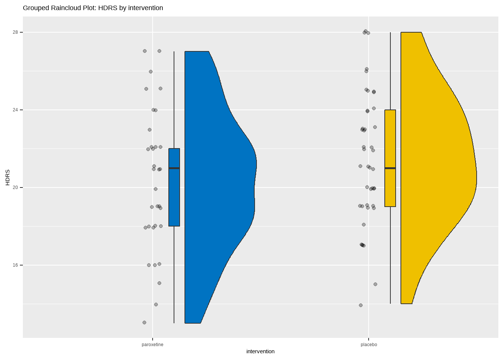
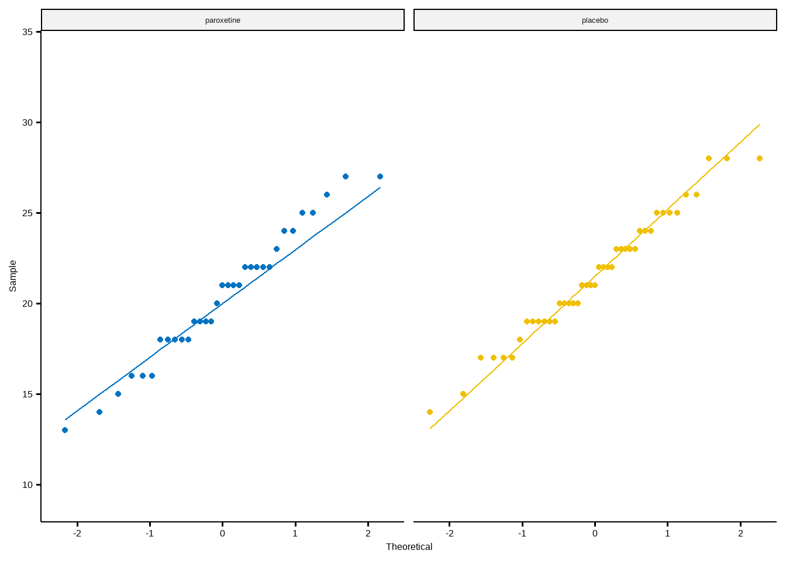

# packages for graphs
library(ggrain)
library(ggsci)
library(ggpubr)
library(ggprism)
# packages for data description, transformation and analysis
library(dlookr)
library(descriptr)
library(rstatix)
library(here)
library(tidyverse)
# packages for reporting the results
library(gtsummary)
library(report)18 Two-sample t-test (Student’s t-test)
Two sample t-test (Student’s t-test) can be used if we have two independent (unrelated) groups (e.g., males-females, treatment-non treatment) and one quantitative variable of interest.
When we have finished this Chapter, we should be able to:
18.1 Research question and Hypothesis Testing
We consider the data in depression dataset. In an experiment designed to test the effectiveness of paroxetine for treating bipolar depression, the participants were randomly assigned into two groups (paroxetine Vs placebo). The researchers used the Hamilton Depression Rating Scale (HDRS) to measure the depression state of the participants and wanted to find out if the HDRS score is different in paroxetine group as compared to placebo group at the end of the experiment. The significance level \(\alpha\) was set to 0.05.
Note: A score of 0–7 in HDRS is generally accepted to be within the normal range, while a score of 20 or higher indicates at least moderate severity.
18.2 Packages we need
We need to load the following packages:
18.3 Preraring the data
We import the data depression in R:
library(readxl)
depression <- read_excel(here("data", "depression.xlsx"))We inspect the data and the type of variables:
glimpse(depression)Rows: 76
Columns: 2
$ intervention <chr> "placebo", "placebo", "placebo", "placebo", "placebo", "p…
$ HDRS <dbl> 19, 21, 28, 22, 22, 28, 23, 17, 19, 20, 26, 23, 23, 22, 1…The data set depression has 76 patients (rows) and includes two variables (columns). The numeric (<dbl>) HDRS variable and the character (<chr>) intervention variable which should be converted to a factor (<fct>) variable using the factor() function as follows:
18.4 Assumptions
A. Explore the characteristics of distribution for each group and check for normality
The distributions can be explored visually with appropriate plots. Additionally, summary statistics and significance tests to check for normality (e.g., Shapiro-Wilk test) can be used.
Graphs
We can visualize the distribution of HDRS for the two groups:
ggplot(depression, aes(x= intervention, y = HDRS, fill = intervention)) +
geom_rain(likert= TRUE, seed = 123, point.args = list(alpha = 0.3)) +
theme_prism(base_size = 20, base_line_size = 0.4, palette = "office") +
labs(title = "Grouped Raincloud Plot: HDRS by intervention") +
scale_fill_jco() +
theme(legend.position = "none")
The above figure shows that the data are close to symmetry and the assumption of a normal distribution is reasonable.
ggqqplot(depression, "HDRS", color = "intervention", conf.int = F) +
theme_prism(base_size = 20, base_line_size = 0.4, palette = "office") +
scale_color_jco() +
facet_wrap(~ intervention) +
theme(legend.position = "none")
Summary statistics
The HDRS summary statistics for each group are:
The means are close to medians (20.3 vs 21 and 21.5 vs 21). The skewness is approximately zero (symmetric distribution) and the (excess) kurtosis falls into the acceptable range of [-1, 1] indicating approximately normal distributions for both groups.
Normality test
The Shapiro-Wilk test for normality for each group is:
depression |>
group_by(intervention) |>
shapiro_test(HDRS) |>
ungroup()# A tibble: 2 × 4
intervention variable statistic p
<fct> <chr> <dbl> <dbl>
1 paroxetine HDRS 0.976 0.670
2 placebo HDRS 0.979 0.614The tests of normality suggest that the data for the HDRS in both groups are normally distributed (p=0.67 >0.05 and p=0.61 >0.05, respectively).
Normality tests frequently fail to be valuable indicators
For small sample sizes, the Shapiro-Wilk test (and other normality tests) has little power to reject the null hypothesis (under-powered test).
If the sample size is large normality tests may detect even trivial deviations from the normal distribution (over-powered test).
B. Check Levene’s test for equality of variances
The Levene’s test for equality of variances is:
depression |>
levene_test(HDRS ~ intervention)# A tibble: 1 × 4
df1 df2 statistic p
<int> <int> <dbl> <dbl>
1 1 74 0.176 0.676Since the p-value = 0.676 >0.05, the \(H_o\) is not rejected. The variances are supposed to be equal.
18.5 Run the t-test
Formulas
We will perform a pooled variance t-test (Student’s t-test) to test the null hypothesis that the mean HDRS score is the same for both groups (paroxetine and placebo).
- Under this \(H_o\), the test statistic is:
\[t = \frac{\bar{x}_{1} - \bar{x}_{2}}{SE_{\bar{x}_{1} - \bar{x}_{2}}}= \frac{\bar{x}_{1} - \bar{x}_{2}}{s_{p} \cdot \sqrt{\frac{1}{n_{1}} + \frac{1}{n_{2}}}} \tag{18.1}\]
where \(n_1\) and \(n_2\) are the sample sizes for paroxetine and placebo groups respectively, and \(s_{p}\) is an estimate of the pooled standard deviation of the two groups which is calculated by the following equation:
\[s_{p} = \sqrt{\frac{(n_{1}-1)s_{1}^2 + (n_{2}-1)s_{2}^2}{n_{1}+ n_{2}-2}} \tag{18.2}\]
Under the null hypothesis, the t statistic follows the t-distribution with \(n - 2\) degrees of freedom (d.f.).
- The 95% confidence interval of the mean difference is:
\[ 95\% \ CI = \bar x_1 - \bar x_2 \pm t^{*}_{df;a/2} * SE_{\bar x_1 - \bar x_2} \tag{18.3}\]
In R:
First, we calculate the mean difference:
mean_1 <- mean(depression$HDRS[depression$intervention == "paroxetine"])
mean_2 <- mean(depression$HDRS[depression$intervention == "placebo"])
mean_dif <- mean_1 - mean_2
mean_dif[1] -1.155039Second, we find the pooled standard deviation:
n_1 <- length(depression$HDRS[depression$intervention == "paroxetine"])
n_2 <- length(depression$HDRS[depression$intervention == "placebo"])
st_div_1 <- sd(depression$HDRS[depression$intervention == "paroxetine"])
st_div_2 <- sd(depression$HDRS[depression$intervention == "placebo"])
numerator <- (n_1-1)*st_div_1^2 + (n_2-1)*st_div_2^2
denominator <- n_1 + n_2 - 2
pooled_st_div <- sqrt(numerator/denominator)
pooled_st_div[1] 3.518441Third, we find the standard error of the mean difference:
st_error <- pooled_st_div*sqrt(1/n_1 + 1/n_2)
st_error[1] 0.8142652Therefore, the t statistic is:
t <- mean_dif / st_error
t[1] -1.418504The corresponding probability for this value can be calculated as the cumulative probability P(T ≤ t) for n-2 degrees of freedom. Then, the p-value is 2*P(T ≤ t) because we are doing a two-tailed test.
P <- pt(t, df = n_1 + n_2 - 2)
p_value <- 2*P
p_value[1] 0.1602415The 95% confidence interval of the mean difference is:
lower_CI <- mean_dif - qt(0.025, df = 74, lower.tail = FALSE)*st_error
lower_CI[1] -2.777498upper_CI <- mean_dif + qt(0.025, df = 74, lower.tail = FALSE)*st_error
upper_CI[1] 0.46742Note that the 95% confidence interval of the mean difference (-2.78, 0.47) includes the hypothesized null value of 0.
Next, we present R functions to carry out all the tasks on our behalf.
The difference between means (20.33 - 21.49) equals -1.16 units and it is not significant (failed to reject \(H_0\); p = 0.16 > 0.05).
18.6 Present the results
Summary table
It is common practice to report the mean (sd) for each group in summary tables.
Show the code
depression |>
tbl_summary(
by = intervention,
statistic = HDRS ~ "{mean} ({sd})",
digits = list(everything() ~ 1),
label = list(HDRS ~ "HDRS score"),
missing = c("no")) |>
add_difference(test.args = all_tests("t.test") ~ list(var.equal = TRUE),
estimate_fun = HDRS ~ function(x) style_sigfig(x, digits = 2),
pvalue_fun = function(x) style_pvalue(x, digits = 2)) %>%
add_n()| Characteristic | N | paroxetine, N = 331 | placebo, N = 431 | Difference2 | 95% CI2,3 | p-value2 |
|---|---|---|---|---|---|---|
| HDRS score | 76 | 20.3 (3.7) | 21.5 (3.4) | -1.2 | -2.8, 0.47 | 0.16 |
| 1 Mean (SD) | ||||||
| 2 Two Sample t-test | ||||||
| 3 CI = Confidence Interval | ||||||
Report the results
There is also a specific package with the name {report} that may be useful in reporting the results of the t-test:
report_results <- t.test(depression$HDRS ~ depression$intervention, var.equal = T)
report(report_results)Effect sizes were labelled following Cohen's (1988) recommendations.
The Two Sample t-test testing the difference of depression$HDRS by
depression$intervention (mean in group paroxetine = 20.33, mean in group
placebo = 21.49) suggests that the effect is negative, statistically not
significant, and small (difference = -1.16, 95% CI [-2.78, 0.47], t(74) =
-1.42, p = 0.160; Cohen's d = -0.33, 95% CI [-0.78, 0.13])We can use the above information to write up a final report: